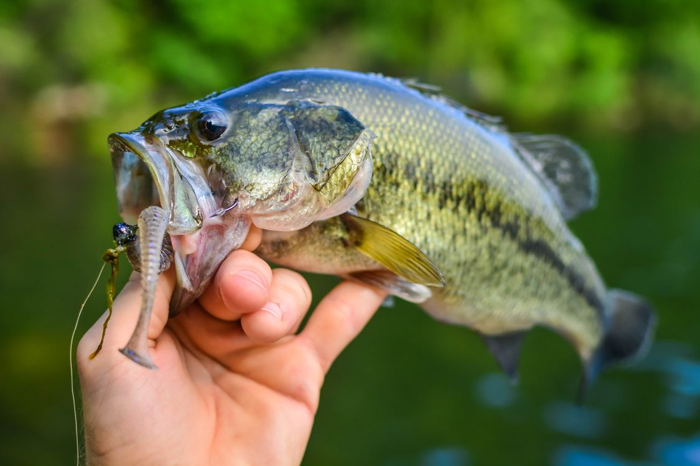
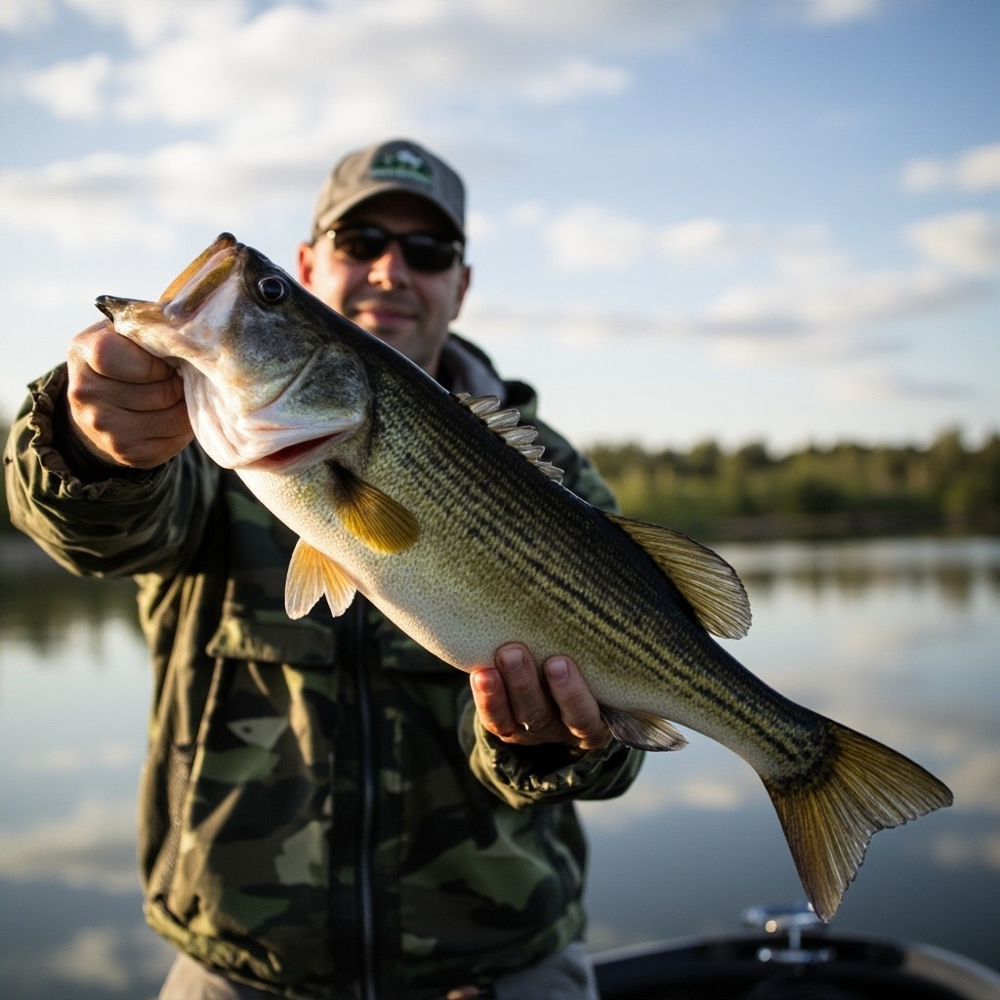
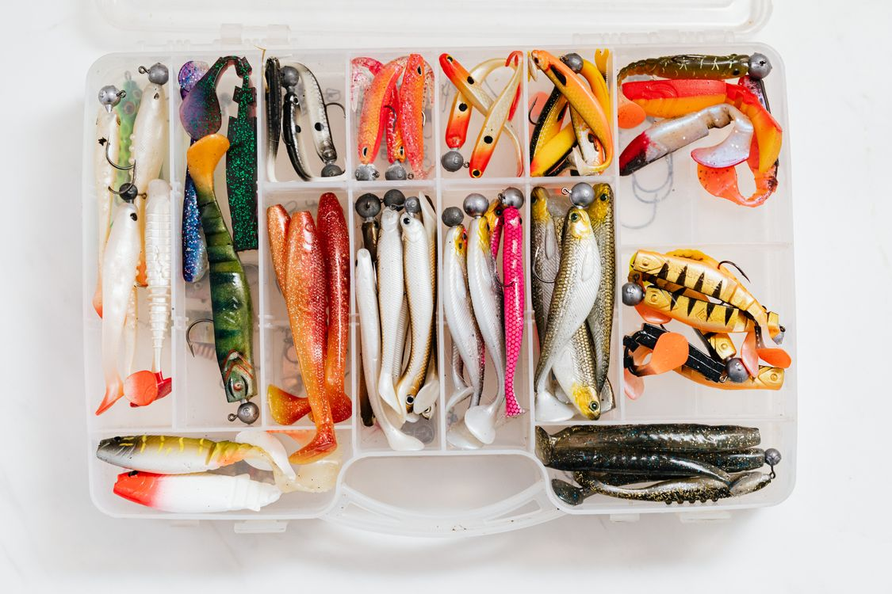

Rod & Reel
A medium-power spinning rod around 6 to 7 feet long is easy to cast and works for many common bass lures.
A simple guide for first-time anglers
Bass fishing is one of my favorite outdoor activities because it combines patience, observation, and a little problem solving. You do not need expensive equipment to start—just a basic rod, a few lures, and some time near the water.
Start with the gear
01
It is easy to learn, but there is always something new to figure out.
Bass can live in ponds, lakes, reservoirs, and rivers, so there are many places to fish without traveling far. A short evening trip can be just as enjoyable as spending an entire day on the water.
I also like that fishing rewards attention. Weather, water clarity, structure, shade, and lure speed can all change the result. Catching a fish feels less like luck when you understand why it was in that spot.

02
A small setup is enough for a beginner.
A medium-power spinning rod around 6 to 7 feet long is easy to cast and works for many common bass lures.
Monofilament in the 8–12 lb range is affordable, forgiving, and simple to tie.
Bring a few hooks, soft plastics, small crankbaits, pliers, and spare line. You do not need dozens of lure types on your first trip.

03
Different lure styles make sense in different situations.
| Lure | Best Use | Difficulty | How to Fish It |
|---|---|---|---|
| Texas-rigged worm | Vegetation, wood, shoreline cover | Easy | Cast, let it sink, then move it slowly |
| Spinnerbait | Windy or stained water | Easy | Cast and retrieve at a steady speed |
| Crankbait | Rocky banks and open water | Medium | Retrieve so it bumps into cover |
| Topwater popper | Calm mornings and evenings | Medium | Pop, pause, and watch the surface |
If I had to recommend only one lure to a new angler, I would start with a soft-plastic worm. It is inexpensive, works in many places, and teaches you how to feel the bottom and detect a bite.
04
Tell me the conditions and I will suggest a starting lure.
How to fish it:
05
Instead of casting randomly, work through an area with a plan.
06
My home waters in Missouri, from quick evening trips to weekend drives.
County park lake with easy bank access. Largemouth bass and crappie. My go-to for a quick trip after work.
Small urban lakes right in the city. Convenient, pressured, but bass are in there if you downsize your presentation.
Big reservoir with largemouth, smallmouth, and spotted bass. Worth the drive when you want a full day on the water.
One of the best bass lakes in the country. Docks, brush piles, and year-round action. A weekend trip, not an evening one.
Clear water and excellent smallmouth fishing. Finesse tactics shine here. Save it for a long weekend.
Always check current Missouri fishing regulations and license requirements with the Missouri Department of Conservation before you go.
07
Where bass are and what they want, season by season.
| Season | What Bass Do | Where to Look | Lures to Try |
|---|---|---|---|
| Spring | Move shallow to spawn; aggressive before and after | Warming backs of creeks, shallow flats | Spinnerbait, jerkbait, Texas-rigged worm |
| Summer | Feed shallow early and late; hold deep midday | Shade and docks at dawn; ledges and humps midday | Topwater popper, deep crankbait, Carolina rig |
| Fall | Chase baitfish shallow and feed heavily | Shallow flats, creek mouths | Lipless crankbait, squarebill, spinnerbait |
| Winter | Deep, slow, and lethargic | Deep structure, channel edges | Jig, drop shot, blade bait — fished very slowly |
08
Check each item before you leave. The progress bar updates automatically.
0 of 6 ready
09
This sample form does not send data anywhere, but it helps organize a simple trip.
10
Your personal record. Everything stays in this browser.
No catches logged yet. Go get one!
11
Who is behind this site.
Hi, I'm Qiwei Li, a senior at Washington University in St. Louis. Bass fishing is one of my favorite ways to get outside — most of my trips are quick evening sessions at Missouri waters like Creve Coeur Lake, with the occasional weekend run to bigger lakes.
This site started as a beginner's guide and grew into my personal fishing companion. The catch log, lure picker, and trip planner all run entirely in your browser: no accounts, no servers, your data stays yours.
12
Before fishing, check local rules and keep learning from reliable sources.
Fishing rules can vary by state and by body of water. These links are useful starting points for regulations, conservation information, and basic fishing skills.